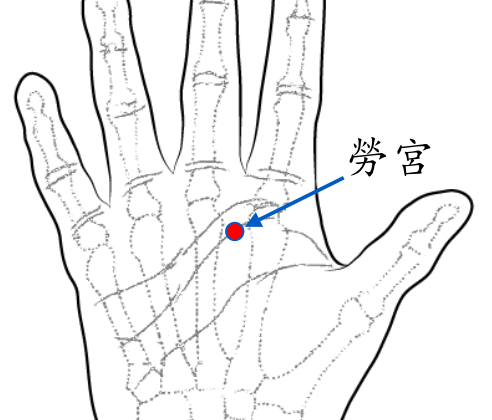

【穴位名稱】: 勞宮 (PC8)

【治療症狀】: 心悸 心動過速 真心痛 心房纖顫 心律不齊 冠心病 貧血 風濕性心臟病 胃痙攣 氣喘 哮 雷諾氏病→末端血液循環差 落枕 手痛 手指痛 手脹_手麻 腳痛 皮膚癢 口腔發炎 口腔潰爛 舌瘡 富貴手
【取穴位置】: 手掌心，第2～3掌骨之間偏於第3掌骨的掌中紋處，握拳屈指時當中指端所指處。《靈樞·本輸》：「掌中，中指本節之內間也」；《針灸甲乙經》：「在掌中央動脈中」；《銅人腧穴針灸圖經》：「以屈無名指取之」，《針灸資生經》：「當屈中指為是，今說屈第四指非也。」《十四經發揮》：「以今觀之，莫若屈中指、無名指之間取之為妥。」現多從《針灸資生經》。
【針刺方法】: 直刺0.3～0.5吋。禁直接灸，艾條溫灸10～15分鐘。